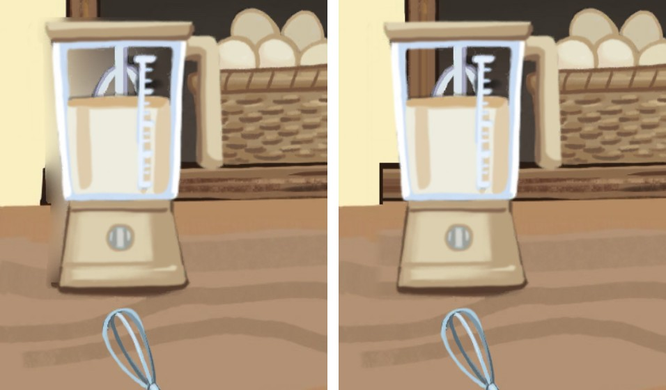
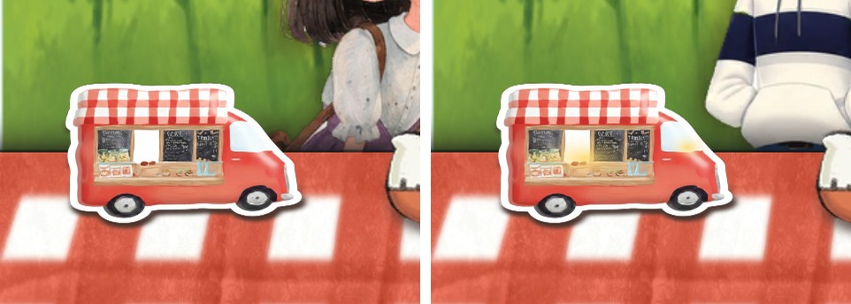
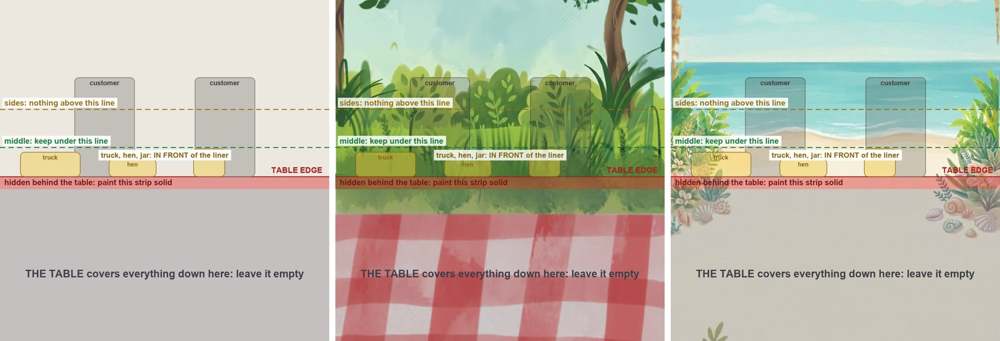

Food Truck Cafe
Your report for 15 November. 26.11.21 (build 28) was approved at 9:00 AM and is going live; test build 31 is on TestFlight.


1Next
You
Test build 26.11.21 (31) on TestFlight: your test runs today.
To check in Current, in no build yet: the kitchen with and without the blender, the truck's window light.
Your table liner: the size and a template are in your iCloud art folder; details in Current.
What's New: you ticked that you will send your own words.
At Apple: 26.11.21 (build 28) was approved at 9:00 AM today and releases by itself. Remove Ads is approved too. Yesterday's players are in Analysis.
Me
Put your liner into the game when you send it. No build and nothing to Apple before your word.
2Q&A
Nothing open.
3Current
Kitchen: with and without the blender, 15 November. Every kitchen picture I have has the blender painted in: your original (the one with the apple tree) and the copy the game uses. So I took it out of the background, and the blender is its own picture on top.

- When it shows: only once ice cream is owned. Chapter 1 has no blender. Ice cream comes with chapter 2's first day, so chapter 2 always has it.
- The counter's wood lines: repainted a second time. Each band now runs through from left to right and follows the same wave as the lines the old blender did not cover.
- What was wrong at first: the background still had the old blender as a blurred patch, wider than the blender picture on top.
Truck: no wiggle, and a window light with three states, 15 November.

- Off: by day, when the kitchen is making nothing.
- Blinking: while the kitchen cooks: an oven baking, the blender or the waffle machine running. By day and by night, a little faster than once a second.
- Warm yellow, steady: from dusk into night. This light was already there; it now gives way to the blink while something cooks.
- Checked in the editor: the truck stands still; the light read off, then swung between dim and bright during an 8-second bread bake, and was steady with the night forced.
- Kept: the glow around the truck when a food runs out.
Your table liner: the size to draw, and a template, 15 November. My background demos are dropped; you draw it. Three files are in your iCloud folder "FoodTruckCafe art":
- table_liner_guide.png: the canvas with the lines below. Import it as the bottom layer, draw on a layer above, hide it before you export.
- table_liner_sample_ch1.png and table_liner_sample_ch2.png: sample liners at the right size, made from your own paintings' grass, plants and shells, for you to change or paint over.

What to draw:
- Canvas: 2048 x 512 pixels, see-through background, one PNG per chapter.
- Width: the whole canvas is an iPad's screen. An iPhone shows only the middle 1256 pixels, between the two blue lines; paint to both edges anyway.
- Table edge: the red line, 64 pixels above the bottom. Below it the table hides the liner: paint that strip solid, so no gap can show.
- Height: in the middle keep it under the green line, about 150 pixels above the table edge, which is the customers' hips. At the sides it may go higher, up to the brown line.
- In front and behind: the truck, the hen and the jar stand in front of the liner; customers and the yoga lady stand behind it.
What makes it work well in the game:
- Paint solid shapes. Soft edges are fine; large see-through washes are not (slow on phones, and they turn blotchy when the game packs the picture).
- Day colours only. Evening and night are tinted by the game, like the background.
- No shadow onto the table, and nothing above the brown line.
- If you want it to sway, or want depth: export a back layer and a front layer as two PNGs of the same canvas. One PNG is enough otherwise.
- Save your files to the "Updates" folder as liner_ch1.png and liner_ch2.png and tell me; I put them in.
4MVP
Everything for the next release. The store has 26.11.21 (build 28) since this morning; none of this is in it.
In test build 31, which you played and approved:
- Remove Ads can be bought: the $ tab works. Apple approved the purchase today.
- Stars from customers served: 3 stars for everyone served their whole order, 2 for 90 %, 1 for more than half.
- Day-end receipt: the cookie stars pop in one by one.
- No stars on the hen.
- Coffee machine upgrade always brews two cups; the extra cup waits on the machine.
- Kitchen by swipe: swipe right to go in, left to come back; the tutorial teaches both. The truck button still works.
- Yoga lady in the star shop, 15 stars: she does yoga in the background and each finished pose gives every waiting customer a flower. By the tree in chapter 1, on a float in chapter 2.
- Star shop: stars can be spent; the shop shows the stars left.
- Patience flowers larger (approved today, not in build 31).
- Sounds: a milk-foaming sound on the coffee machine; quieter coffee pour, pop, blender and coin; a new order-complete sound (your pick, number 6).
Done today, in no build, waiting for your check in Current:
- Kitchen blender: no blur beside it; shown only once ice cream is owned.
- Truck: no wiggle; a window light that is off, blinks while the kitchen cooks, and is warm yellow at night.
Coming from you: the liner picture between customers and table (template in Current).
Still needed for the release: your What's New words, a new version number (26.11.21 is used), and your word to submit.
5Backlog
6Analysis, 14 and 15 November
Read 15 November, 9:15 AM PST, from Unity (first opens of the store copy; days are UTC). Left out: Apple's review run and your own phone. You saw 15 downloads at Apple; Unity shows 14 first opens over the two days, which fits, since a download counts before the first open.
| What happened | Players | Who |
|---|---|---|
| Opened the game for the first time | 14 | 10 Philippines, 3 United States, 1 Vietnam |
| Nothing recorded after opening | 7 | 6 Philippines, 1 Vietnam |
| Left at tutorial step 3, "Tap the bread to serve it" | 2 | United States |
| Finished the tutorial and started day 1 | 5 | 4 Philippines, 1 United States |
| Finished day 1 (on record) | 2 | one of them also finished day 2 |
| Watched an ad | 3 | one each |